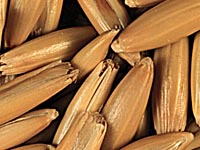

The exact history of oats is a mystery. The Asia minor region is accepted as the origin of the wild oat
species (Avena sterilis and A. fatua) believed to be the cousins of cultivated oats.
The issue of which wild type is the progenator of today's oats is under debate. It is thought that Slavs and
Scthians (warlike horsemen from the Black Sea in Central Asia) migrated over many regions carrying various cereal grains with them. Through natural selection for the northern environments,
hardy species survived, resulting in A. sativa becoming the most commonly used cultivated type in Northern Europe.
How are they used?
High levels of protein and essential minerals make oats an excellent livestock feed. The high fibre content of oats is mainly in it's outer hull, aiding digestion and reducing some feeding problems which may
be a problem with other feeds. A small portion of
oats are used for human food, in production of oatmeal (rolled-oats), oat starch, and cookies. Oats and
oat bran have been popular health food products beneficial in lowering cholesterol levels. This increase consumption by humans has resulted in more of a demand for high quality oats.
Industrially, oats are used in the
production of plastics, pesticides, and preservatives and oats are used in the paper and brewing industries.

How much is produced?
Oats make up approximately 5-7% of
world course grain production, ranking sixth in the world cereal production after wheat, maize, rice, barley, and sorghum. Around
the world, over 25 000 000 hectares are used for growing 48 000 000 +
tonnes of oats annually. The highest commercial yields for oats tend to come from the Netherlands, Switzerland, West Germany, the United Kingdom, Ireland, Sweden, and France. In
terms of global oat production, Canada ranks third, producing
8.0 % (3 906 000 t) of world's oat production, next to USA, which
produced 11.5% (5 582 000 t) and Russia, which produces an enormous
45.2% of the world market - almost 22 million tonnes per year (U.S. Feed Grains Council).
How much do we produce?
When horses and other animals were
depended on for work, as much as 25% of their land was sown to oats. Today, in the age of mechanized farming, only about 5% of Saskatchewan land is devoted to oats (888 000 acres, producing
around 724 860 tonnes per year).
What's so good about oats???
Besides rye, oats have the greatest
tolerance for different climate and soil conditions. Oats do
very well in conditions too cool and too wet for other cereals. Due to this characteristic, oats are often sown in low areas or sloughs where seeding may be delayed due to wet conditions. On a world scale, oats grow well between latitudes of 35 - 50° north and 20 to 40° south. Days to maturity (94 to 96) is close to that of wheat yet oats can germinate in cool, damp soils.
|